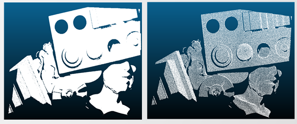
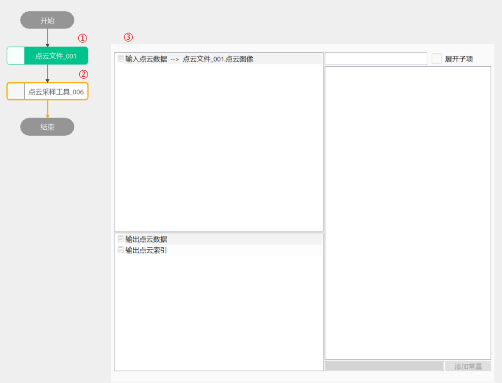
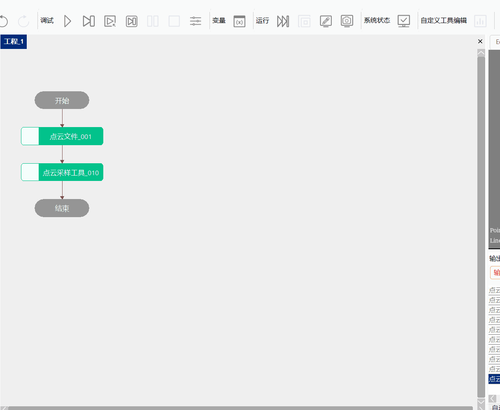

点云采样工具
1.功能概述
点云采样工具主要服务于3D点云测量项目，解决点云数据量大需进行降采样问题，工具主要应用在三维测量项目的预处理阶段。
2.使用场景
典型的应用场景如：获取点云数据时，由于点云数据过于庞大带来的影响，对其进行操作时处理时间过长，需要使用点云采样工具，可以通过体素采样、随机采样、固定索引步长采样、空间点距采样的方式，减少点云数据量，有效缩短处理时间。

图2_1 点云采样
3.使用向导

图3_1 点云采样：采样流程

图3_2 点云采样：体素采样
3.2随机采样
step1：添加点云文件、点云采样工具，并双击打开工具参数链，链接点云文件，如图3-1所示；
step2：右击点云采样工具点击“属性”打开工具高级界面，如图3-3所示，采样类型选择“降采样”，采样方法设置“随机采样”，设置采样参数，然后点击运行即可得到采样结果；
 图3_3 点云采样：随机采样
图3_3 点云采样：随机采样
3.3固定索引步长采样
step1：添加点云文件、点云采样工具，并双击打开工具参数链，链接点云文件，如图3-1所示；
step2：右击点云采样工具点击“属性”打开工具高级界面，如图3-3所示，采样类型选择“降采样”，采样方法设置“固定索引步长”，设置采样参数，然后点击运行即可得到采样结果；
 图3_4 点云采样：固定索引步长采样
图3_4 点云采样：固定索引步长采样
4.常见问题
5.参数说明
输入参数（参数链）
| 参数名称 |
参数描述 |
| 输入点云数据 |
链接外部的的点云图像 |
输入参数（属性窗口）
| 参数名称 |
参数描述 |
| 点云采样类型 |
分为体素采样和降采样 |
| 体素X、Y、Z |
指定单个体素网格尺寸大小，以此对整片点云进行体素划分；取值范围为[0.001,1] |
| 单个体素内最少点 |
指定有效体素内的最少点数，少于该阈值的体素网格为无效体素，采样结果将剔除无效体素内的点；取值范围为(0,500] |
| 体素特征点类型 |
指定体素滤波结果的特征点类型，包含体素质心点和体素中心最近点 |
| 裁剪方向 |
指定X/Y/Z/XYZ等方向进行裁剪 |
| X/YZ上下限 |
取值范围为[-20000,20000] |
| 采样方法 |
指定降采样的方法，包含随机采样、固定索引步长采样、空间点距采样 |
| 输出数据类型 |
包含索引和数据点 |
| 空间点距 |
指定降采样后各点的间隔，仅空间点距采样有效；取值范围为[0.001,5] |
输入参数（高级界面）
高级界面参数与属性窗口参数一致。
输出参数（参数链）
| 输出点云数据 |
包含点云中点个数； |
| 输出点云数据 |
供外部使用的点云数据 |
输出参数（输出窗口）
| 参数名称 |
参数描述 |
| 输出点云数据 |
包含点云中点个数 |
| 执行结果 |
工具执行结果 |
| 执行时间 |
工具执行时间 |
6.示例工程
参见“\Samples\3D\点云\点云测量.gvp”。
7.特殊说明
采样原理说明
点云采样工具：点云采样工具主要包括体素/均匀/索引/空间点距/随机等功能
体素采样原理：先对输入点云进行体素网格划分，然后对体素内作重叠点处理，选取体素网格质心点
随机采样原理：对输入点云进行随机选点降采样
索引采样原理：根据指定的索引步长对输入点云进行降采样
空间点距采样原理：根据指定采样后的各点空间点距对输入点云进行降采样